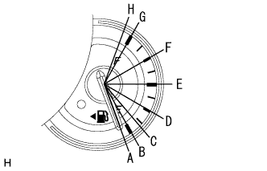
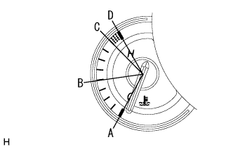

Meter & Gauge System ECU Data Monitor / Active Test |
TaSCAN - Data Monitor
Using SST (TaSCAN), follow the prompts on the screen to display the "ECU Data Monitor" screen and check the computer data.
| Item Name [Symbol] | Item Description/Display Range | Standard Value | Remarks |
|---|---|---|---|
| Tail signal status (TSIG) | Tail relay SW status Display range: OFF - ON | ON: Dimmer switch ON OFF: Dimmer switch OFF | If abnormal, a malfunction in the tail relay, wire harness, etc. is suspected |
| Odometer/trip meter change SW [CHGSW] | Odometer/trip meter change SW status Display range: OFF - ON | ON: Switch pressed OFF: Switch released | If abnormal, trip switch malfunction is suspected |
| Front passenger buckle SW [PSBSW] | Front passenger buckle SW status Display range: OFF - ON | ON: Front passenger buckle SW not fastened OFF: Front passenger buckle SW fastened | Seat must be occupied |
| Occupant sensor status Display range: OFF - ON | ON: Seat occupied OFF: Seat not occupied | Front passenger buckle must be unfastened | |
| Vehicle speed [SPD] | Vehicle speed input value Display range: 0 to 255 [km/h] | 0 to 255 [km/h] Almost synchronized with actual vehicle speed | Check speedometer indication error |
| Engine speed [ESPD] | Engine speed input Display range: 0 to 12750 [r/min] | Engine running Almost synchronized with engine speed | - |
| Engine coolant temperature [EWTMP] | Engine coolant temperature input Display range: 0 to 127.5°C | Equivalent to outside temperature: when cold When fully warmed up: 80 to 100°C | If abnormal, a malfunction in the coolant temperature signal circuit is suspected |
| +B voltage input value [VOL] | Input voltage value Display range: 0 to 22.5V | Displays input voltage value 11 to 14V | - |
| Multi-display change SW (DSPSW) | Steering SW "DISP" switching status Display range: OFF - ON | ON: Switch pressed OFF: Switch released | If abnormal, a malfunction in the steering switch, wire harness, etc. is suspected |
| Fuel sender input value [FUEL] | Fuel sender input value Display range: 0 to 127.5 [L] | Displays fuel amount 4.0 to 50 [L] | If abnormal, a malfunction in the fuel sender gauge is suspected |
| Outside temperature input value [TEMP] | Outside temperature Display range: -40 to 87.5 | Almost the same as outside temperature | - |
| U0100 latest detection [DTC11] | Engine ECU communication malfunction status Display range: None/0 to 65535 | None/U0100 | - |
| U0100 latest detection odometer value [DTC11] | Engine ECU communication malfunction status Display range: 0 to 999999 [km] | Displays the distance driven when the DTC was detected | - |
| U0100 detection 1 times before [DTC12] | Engine ECU communication malfunction status Display range: None/0 to 65535 | None/U0100 | - |
| U0100 odometer value at detection 1 times before [DTC12] | Engine ECU communication malfunction status Display range: 0 to 999999 [km] | Displays the distance driven when the DTC was detected | - |
| U0100 detection 2 times before [DTC13] | Engine ECU communication malfunction status Display range: None/0 to 65535 | None/U0100 | - |
| U0100 odometer value at detection 2 times before [DTC13] | Engine ECU communication malfunction status Display range: 0 to 999999 [km] | Displays the distance driven when the DTC was detected | - |
| U0129 latest detection [DTC21] | Brake ECU communication status Display range: None/0 to 65535 | None/U0129 | - |
| U0129 latest detection odometer value [ODO21] | Brake ECU communication status Display range: 0 to 999999 [km] | Displays the distance driven when the DTC was detected | - |
| U0129 detection 1 times before [DTC22] | Brake ECU communication status Display range: None/0 to 65535 | None/U0129 | - |
| U0129 odometer value at detection 1 times before [ODO22] | Brake ECU communication status Display range: 0 to 999999 [km] | Displays the distance driven when the DTC was detected | - |
| U0129 detection 2 times before [DTC23] | Brake ECU communication status Display range: None/0 to 65535 | None/U0129 | - |
| U0129 odometer value at detection 2 times before [ODO23] | Brake ECU communication status Display range: 0 to 999999 [km] | Displays the distance driven when the DTC was detected | - |
| Number of DTCs [DTC] | Number of DTCs output Display range: 0 to 255 codes | Displays number of DTCs output 0 to 255 codes | - |
TaSCAN - Active Test
Using SST (TaSCAN), follow the prompts on the screen to display the "Active Test" screen and perform the inspection.
| Item Name | Item Description | Inspection Item |
|---|---|---|
| Speedometer | Switch meter vehicle speed | 160、120、80、40、0(km/h) |
| Tachometer | Engine Speed Indication Switching | 7000、6000、5000、4000、3000、2000、1000、0(r/min) |
| Fuel gauge | Fuel gauge indication switching Refer to [display 1] |
|
| Water temperature gauge | Water temperature gauge indication switching Refer to [display 2] |
|
| AT indicator No.1 | Turn AT indicators on/off | Turn on L, 2, 3, 4, D, N, R, P (positions) |
| AT indicator No.2 | Turn AT indicators on/off | Turn on 5, 6, 7, S, B, M (positions) |
| TelltaleNo.1 | Blink (1HZ)/turn off meter indicators | SRS airbag, pre-crash (PCS) |
| TelltaleNo.2 | Blink (1HZ)/turn off meter indicators | Front passenger seat belt (*1), driver seat belt |
| TelltaleNo3 | Blink (1HZ)/turn off meter indicators | ABS、CHARGE、FUEL |
| TelltaleNo.4 | Blink (1HZ)/turn off meter indicators | SLIP |
| TelltaleNo.5 | Blink (1HZ)/turn off meter indicators | BRAKE、ECO |
| TelltaleNo.6 | Blink (1HZ)/turn off meter indicators | P/S (EPS), AT fluid temperature |
| TelltaleNo.7 | Blink (1HZ)/turn off meter indicators | CRUISE |
| TelltaleNo.8 | Blink (1HZ)/turn off meter indicators | Master warning |
| TelltaleNo.11 | Blink (1HZ)/turn off meter indicators | 4WD AUTO |
| Display No.1 | Turn on multi-display (LCD ODO) | All on |
 |
[Display 1]: Fuel receiver gauge
| Display | Gauge Indication Position |
|---|---|
| A | Sender E point (+ warning on) |
| B | Meter E graduation (+ warning on) |
| C | Warning on position |
| D | Meter 1/4 graduation |
| E | Meter 1/2 graduation |
| F | Meter 3/4 graduation |
| G | Meter F graduation |
| H | Sender F point |
 |
[Display 2]: Water temperature receiver gauge
| Display | Gauge Indication Position |
|---|---|
| A | 45°C |
| B | Middle stable range |
| C | 120°C |
| D | 127°C |